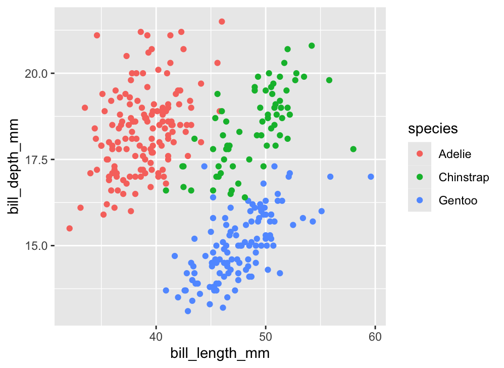
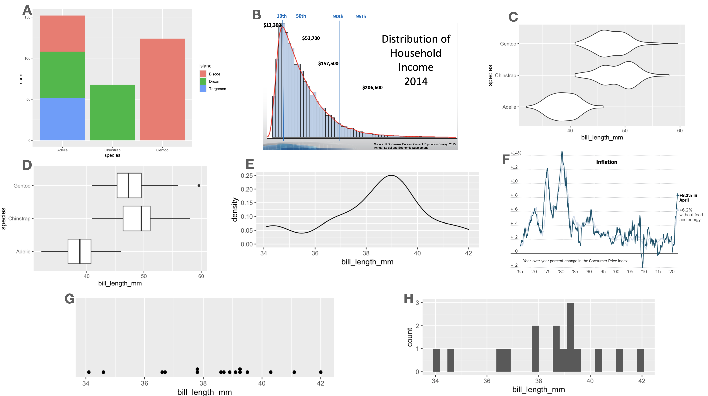
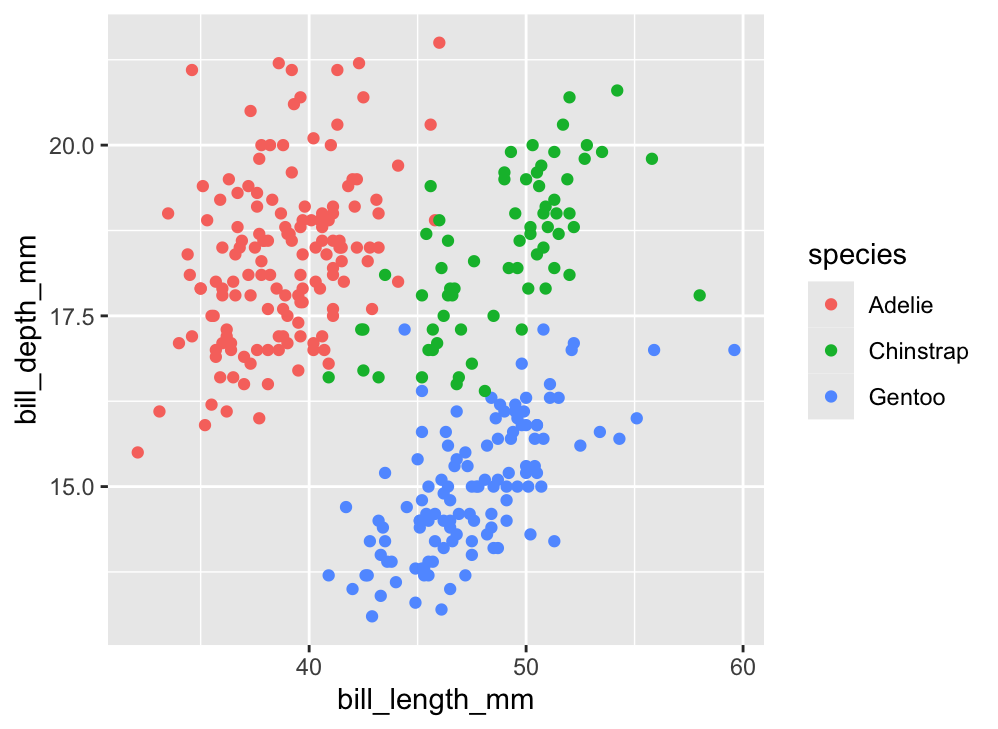
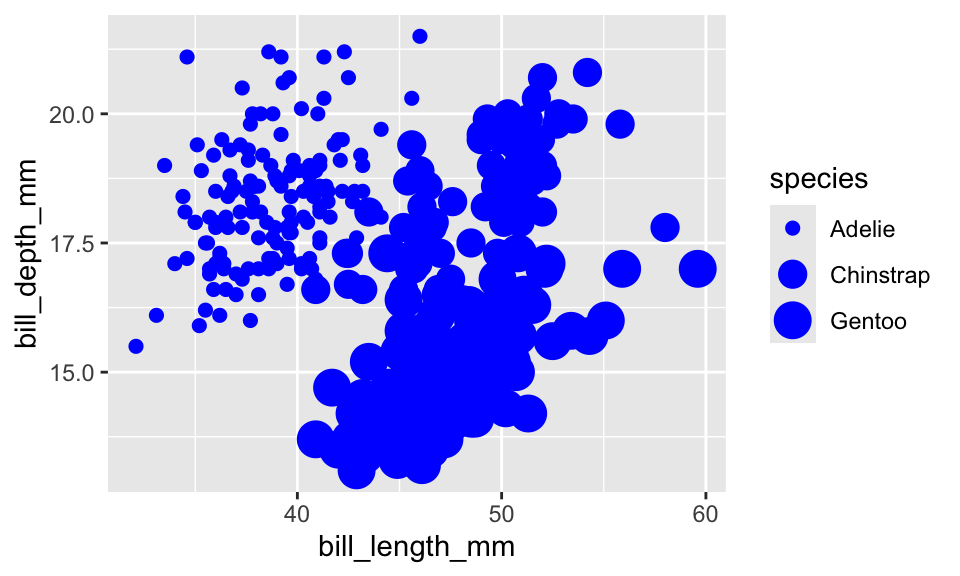
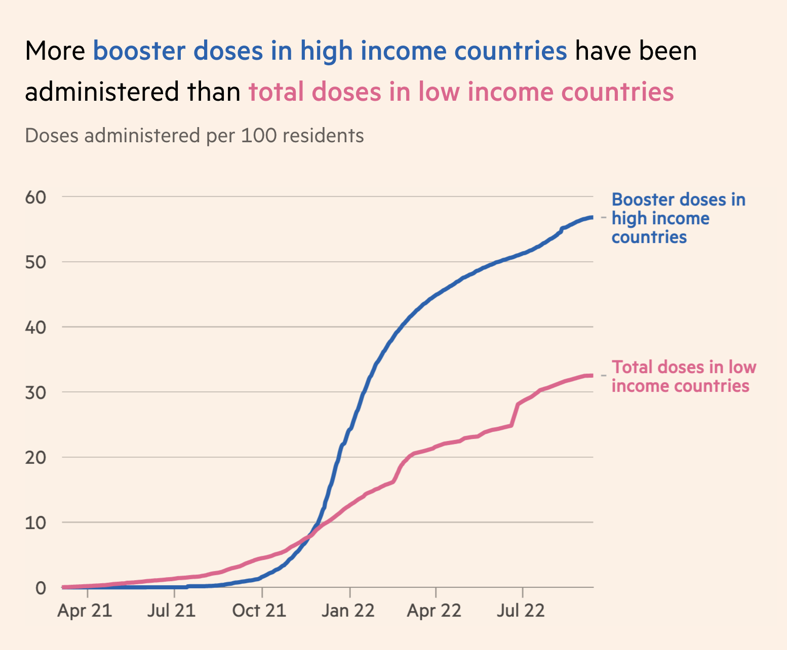

ggplot(data = penguins,
mapping = aes(x = bill_length_mm,
y = bill_depth_mm,
color = species)) +
geom_point()
A unified framework for constructing statistical graphics.
In the last set of notes, we saw that there is a side to the discipline of Statistics that looks like engineering. Summary statistics - medians, standard deviations, etc. - are carefully crafted tools that capture different characteristics of a data set for use in very specific situations. There is another practice in statistics that looks more like a science; that is, a field that seeks to take many different phenomena and explain them using a systematic overarching theory. That practice is data visualization.
At this point in the course, you’ve seen several several examples of data visualizations.

The diversity of shapes and structures used in these plots suggest that each one is a thing-unto-itself, specially devised to provide one particular style of visualization. But what elements do they share?
Focus on the nature of the data being used. Exactly half of the plots above are illustrating the distribution of a single variable; the other half illustrate the relation between two variables. Can you tell which is which?
Consider the manner in which variability in the data is being conveyed used different visual cues. How many of the plots above utilize an x-axis? A y-axis? Color?
Finally, how are the observations finding their way onto the plot? Three of the plots above share the same data variable, utilize the same visual cues, and differ only in the shape used to encode the observations.
By asking these questions, we begin to find recurring structures in a wide range of plot types. These recurring structures have been compiled into a widely-used framework called the Grammar of Graphics.
In 1999, a statistician named Leland Wilkinson published the first edition of what has been the most influential work in data visualization, The Grammar of Graphics1. The title is fitting. In the same way that a grammar defines the regular structures and composition of a language, his book outlines a framework to structure statistical graphics.

Nearly every current software tool used to build plots has been informed by this book2. Its influence can be found in Tableau, Plotly, and the Python libraries bokeh, altair, seaborn, and plotnine. The most complete implementation of the grammar is found in an R package called ggplot2 by Hadley Wickham3.
In Wickham’s adaptation of the grammar of graphics, a plot can be decomposed into three primary elements:
Let’s go through each of these components one-by-one to understand the role that they play in a plot like this, which we’ll refer to as the “penguin plot”.
ggplot(data = penguins,
mapping = aes(x = bill_length_mm,
y = bill_depth_mm,
color = species)) +
geom_point()
The above plot is an example new type of plot which involves at least two numerical variables: a scatter plot. The points may also be colored by a third variable, generally a categorical one.
What variables are needed to construct the penguin plot above?
We see bill_length_mm and bill_depth_mm; those are labeled clearly on the x and y axes. We must also know the species of each of these penguins in order to know which color to label each point. In other words, there are three columns of a data frame that we need to have on hand.
penguins |>
select(bill_length_mm,
bill_depth_mm,
species)# A tibble: 333 × 3
bill_length_mm bill_depth_mm species
<dbl> <dbl> <fct>
1 39.1 18.7 Adelie
2 39.5 17.4 Adelie
3 40.3 18 Adelie
4 36.7 19.3 Adelie
5 39.3 20.6 Adelie
6 38.9 17.8 Adelie
7 39.2 19.6 Adelie
8 41.1 17.6 Adelie
9 38.6 21.2 Adelie
10 34.6 21.1 Adelie
# ℹ 323 more rowsThrough working on your assignments, you may have also seen the following plot, which is a variant of the “penguin plot”:
Notice that the Adelie penguins are missing. Based on your last set of notes, they must have been filtered out! What this means is that to make this plot, we first had to modify the dataset and then use the modified version in our plot. We can do these steps in one piece of code by using the pipe.
penguins |>
filter(species != "Adelie") |>
ggplot(mapping = aes(x = bill_length_mm,
y = bill_depth_mm,
color = species)) +
geom_point()Connecting pipeline pieces together is still done with |>. Once we reach ggplot(), we switch to +, as this is our method of adding layers to our plot.
In this course we’ve talked plenty about the structure of a data frame, so this part of the grammar of graphics is straight-forward. Be sure that every variable that you wish to include in your plot is present in the same data frame. Make sure also that if you want to focus on specific pieces of your data, that you zero in on these before making your visualization.
More fundamentally, be sure the data you’re using is well-suited to the message you aim to convey with your plot. Many plots go wrong right here at the outset, so be sure you’re on firm footing.
The most impactful decision that you’ll make when constructing a plot using the grammar of graphics is deciding how to encode variables in a data frame into visual variation in your plot.
The penguin plot relies upon three forms of visual variation. The first is the location along the x-axis. Penguins with longer bills are placed on the right side of the plot and those with shorter bills are placed on the left. Variation in bill depth is captured by variation in the location along the y-axis, which is the second form. The third form is color: each of the three species is designated by one of three colors.

We can summarize this encoding, or “aesthetic mapping”, as:
bill_length_mm is mapped to the x-axisbill_depth_mm is mapped to the y-axisspecies is mapped to colorThese are three of many different techniques for visually encoding variability. Here is a list of the aesthetic attributes that are most commonly used:
x: location along the x-axisy: location along the y-axiscolor: hue of the mark that represents the observationalpha: the level of transparency of the colorsize: the size of the mark representing the observationshape: the shape of the mark representing the observationfill: the color of the inside of the representation of an observationWith the data set in place and the aesthetic mappings selected, the final choice in making our plot is to decide how to graphically express the observations themselves. For the penguin plot above, each observation in represented by a point, so it is said to use a “point” geometry. That is just one of many options. Other options are listed below.
pointbarlinehistogramdensityviolindotplotboxplotWhen we speak about whether a plot is a scatter plot, a bar chart, a histogram, etc, we are discussing the geometry of a plot. The impact of this choice can be seen in the following two plots.
Both plots share the same data (penguins) and the same aesthetic mappings(bill_length to the x-axis and species to the y-axis). Where they differ is the geometry: the plot on the left uses the violin while the one on the right uses the boxplot.
The Grammar of Graphics is a framework to express a great variety of statistical graphics in terms of their shared elements. In this framework, the core features of the plot are the data, the aesthetic mapping between aesthetic attributions and variables in the data frame, and the geometry that is used to express the observation. There are a wide range of geometries and aesthetic attributes that can be drawn from and recombined in powerful ways. What we have done so far is cover just the fundamentals of the framework, so if you are unsatisfied with the resulting plots, that’s good. Now, we will polish up these plots to make thoughtful graphics that focus on effectively conveying a single message.
At this point in the course, you have a bevy of different types of statistical graphics under your belt: scatterplots, histograms, dot plots, violin plots, box plots, density curves, and bar plots of several kinds. You also have a broad framework to explain how these graphics are composed: the Grammar of Graphics. But to what purpose? Why plot data? For whom?
Every time you build a plot, you do so with one of two audiences in mind.
The process of building understanding from a data set is one that should be driven by curiosity, skepticism, and thoughtfulness. As a data scientist, you’ll find yourself in conversation with your data: asking questions of it, probing it for structure, and seeing how it responds. This thoughtful conversation is called exploratory data analysis (or EDA).
During EDA, the aim is to uncover the shape and structure of your data and to uncover unexpected features. It’s an informal iterative process where you are your own audience. In this setting, you should construct graphics that work best for you.
At some point, you’ll find yourself confident in the claim that can be supported by your data and the focus changes to communicating that claim as effectively as possible with a graphic. Here, your audience shifts from yourself to someone else: other scientists, customers, co-workers in a different part of your company, or casual readers. You must consider the context in which they’ll be viewing your graphic: what they know, what they expect, what they want.
In these notes we discuss six ways to hone the message of your data visualization. They are:
We will use two running examples throughout these notes: a line plot of the number of christenings in 17th century London which were collected by a man named John Arbuthnot, 4 and a scatter plot showing the bill sizes of penguins near Palmer Station, Antarctica5.
Line plots also include two numerical variables and are useful for modeling trends that occur over time. The time variable goes on the x-axis; the trend variable goes on the y-axis. In the line plot shown here, we model the number of children that were christened in 16th and 17th century England.
Once you have your first draft of a plot complete and you’re thinking about how to fine tune it for your audience, your eye will turn to the aesthetic attributes. Is that color right? What about the size of the points?
Consider the first draft of the penguins plot above. It might feel a bit drab to have a large mass of points all in black, the same color as the labels and surrounding text. Let’s make the points blue instead to make them stand out a bit more.
ggplot(penguins, aes(x = bill_length_mm,
y = bill_depth_mm,
color = "blue")) +
geom_point()This is . . . unexpected. Why did it color the points red? Is this a bug?
What we’ve stumbled into is a subtle but essential distinction in the grammar of graphics: mapping vs setting. When you put an aesthetic attribute (x, color, size, etc.) into the aes() function, you’re mapping that attribute in the plot to whatever data lives in the corresponding column in the data frame. Mapping was this process:
That’s not what we set out to do here. We just wanted to tweak the look of our aesthetic attributes in a way that doesn’t have anything to do with the data in our data frame. This process is called setting the attribute.
To set the color to blue6, we need to make just a small change to the syntax. Let’s move the color = "blue" argument outside of the aes() function and into the geom_() function.
ggplot(penguins, aes(x = bill_length_mm,
y = bill_depth_mm)) +
geom_point(color = "blue")Ah, that looks much better!
Color isn’t the only aesthetic attribute that you can set. Let’s increase slightly the size of our points by setting the size to three times the size of the default.
ggplot(penguins, aes(x = bill_length_mm,
y = bill_depth_mm)) +
geom_point(color = "blue", size = 3)It’s not clear that that improves the readability of the plot - there is more overlap between the points now - but the setting worked. One thing we might do to get more visibility on some of the points that were clumped is to use the alpha mapping!
ggplot(penguins, aes(x = bill_length_mm,
y = bill_depth_mm,
size = species)) +
geom_point(color = "blue",
size = 3,
alpha = .5)How would it have looked if instead we had mapped the size? When you map, you need a map to a column in your data frame, so let’s map size to species.
ggplot(penguins, aes(x = bill_length_mm,
y = bill_depth_mm,
size = species)) +
geom_point(color = "blue")
We’ve made a mess of our plot now, but it is clear what happened. R looked inside the species column, found a categorical variable with three levels and selected a distinct size for each of those levels.
All in all, this is another area in which the grammar of graphic guides clear thinking when constructing a graphic. The aesthetic attributes of a plot can be determined either by variability found in a data set or by fixed values that we set. The former is present in all data visualization but it’s the latter that comes into play when fine-tuning your plot for an audience.
You may have noticed that ggplot2 pulls the labels for the x-axis, the y-axis, and the legend directly from the names of the variables in the data frame. This results in labels like bill_length_mm, which is no problem when you’re making plots for yourself - you know what this variable means. But will an outside audience?
You can change the labels of your plot by adding a labs() layer.
ggplot(penguins, aes(x = bill_length_mm,
y = bill_depth_mm)) +
geom_point(color = "blue") +
labs(x = "Bill Length (mm)",
y = "Bill Depth (mm)")Axis and legend labels should be concise and often include the units of measurement. If you find them getting too wordy, know that you can clarify or expand on what is being plotted either in a figure caption or in the accompanying text.
Speaking of captions, those a can be added too, as well as a title.
ggplot(penguins, aes(x = bill_length_mm,
y = bill_depth_mm)) +
geom_point(color = "blue") +
labs(x = "Bill Length (mm)",
y = "Bill Depth (mm)",
title = "Penguins show little association between bill length\n and bill depth",
caption = "Source: Data collected by Dr. Kristen Gorman at Palmer Station, Antarctica")The title of a plot is valuable real estate for communicating the primary story of your plot. It should highlight the most important structure in the data. In the plot above, there appears to be little correspondence between bill length and bill depth. Of course, that changes when we map species to color. Let’s make that plot and title it accordingly.
ggplot(penguins, aes(x = bill_length_mm,
y = bill_depth_mm,
color = species)) +
geom_point() +
labs(x = "Bill Length (mm)",
y = "Bill Depth (mm)",
title = "Bill length and bill depth positively correlated and\n strongly dependent on species",
caption = "Source: Data collected by Dr. Kristen Gorman at Palmer Station, Antarctica")The practice of using the plot title to convey the main message of the plot is used to powerful effect by the visualization experts at the British publication, The Financial Times7. They have developed a wealth of visualizations to help readers understand what is happening with public health throughout the pandemic. The sobering graphic below uses the title to guide the viewer to the most important visual structure in the plot: the yawning vertical gap between dosage rates between high and low income countries.

When a person views your plot, their first impression will be determined by a coarse interpretation of the boldest visual statement. When using a line plot, that is usually the general trend seen when reading left to right.
What is the first word that comes to mind to describe the trend in each of the four plots below?
Clockwise from the upper left, you likely said something like “increasing”, “decreasing”, “variable”, and “stable”. Now take a second look. What exactly is being plotted here?
The labels along the axes are a hint to what you’re looking at here. These are, in fact, four plots from the exact same data: the Arbuthnot christening records, with the proportion of girls christened on the x-axis. What differs is the limits of the x- and y-axes.
Most software will automatically set the limits of your plot based on the range of the data. In the Arbuthnot data, the years range from 1629 to 1710 and the proportion of girls christened ranges from .463 to .497. The leads to the default graphic found in the lower left panel. Each of the other three plots have modified the limits of the x- or y-axis to capture different parts the data scaled in different ways. In ggplot2 this is done by adding an xlim() or ylim() layer.
This is the power of scaling. From one data set, you can convey four different (and incompatible!) messages by changing the scale. So which one is correct? It depends on the context and the question that drove the collection of the data. John Arbuthnot’s mission in collecting his data was to understand the whether the chance of being born a girl is 1/2. That question is answered most clearly by the following plot (with the title driving home that main message).
ggplot(arbuthnot, aes(x = year,
y = p_girls)) +
geom_line() +
ylim(0, 1) +
labs(title = "Proportion girls christened slightly but persistently\n below 50%",
x = "Year",
y = "Proportion")The importance of scale extends beyond scatter and line plots. Barcharts are often the subject of careful scaling to convey a particular message. What do you think the goal was of the creator of the plot titled “Should Britain Leave EU?”8
What piece of software did I use to produce the following plot?
If you said “Excel”, you are correct! Well… it is Excel in spirit. What makes this plot look like it was made in Excel are a series of small visual choices that were made: the background is a dark gray, there are black horizontal guide lines, and the plot and the legend is surrounded by a black box. Small decisions like these that effect the overall look and feel of the plot are called the theme. The theme used here belongs to the ggthemes library. Here’s the code used.
library(ggthemes)
ggplot(penguins, aes(x = bill_length_mm,
y = bill_depth_mm,
color = species)) +
geom_point() +
labs(x = "Bill Length (mm)",
y = "Bill Depth (mm)") +
theme_excel()Let’s look at a few more. Do they look familiar?
p1 <- ggplot(penguins, aes(x = bill_length_mm,
y = bill_depth_mm,
color = species)) +
geom_point() +
labs(x = "Bill Length (mm)",
y = "Bill Depth (mm)") +
theme_wsj()
p2 <- ggplot(penguins, aes(x = bill_length_mm,
y = bill_depth_mm,
color = species)) +
geom_point() +
labs(x = "Bill Length (mm)",
y = "Bill Depth (mm)") +
theme_bw()
p3 <- ggplot(penguins, aes(x = bill_length_mm,
y = bill_depth_mm,
color = species)) +
geom_point() +
labs(x = "Bill Length (mm)",
y = "Bill Depth (mm)") +
theme_economist()
p1 / p3 / p2They are, from top to bottom, a theme based on The Wall Street Journal, The Economist, and one of the themes built into ggplot2 packaged called bw for “black and white” (there are no grays). The ggplot2 library has several themes to choose from and yet more live in other packages like ggthemes. To use a theme, all you need to do is add a layer called theme_NAME (e.g. for the black and white theme, use theme_bw()).
Themeing your plots is an easy way to change the look of your plot. Tinker with a few different themes and considering adding them to your labs9. But, as with all design decisions around graphics, be sure to think about your audience. You might find the Excel aesthetics ugly and dated, but will your audience? If you’re presenting your plot to a community that works with Excel plots day in and day out, that’s probably a sound choice. If you are preparing a plot for submission to a scientific journal, a more minimalist theme is more appropriate.
In the same way that a title highlights the main message of a plot, you can rely upon visual cues to draw attention to certain components or provide helpful context.
Although the Arbuthnot records seem very simple, they actually capture a wealth of historical information. We can add this information to our plot by adding annotations.
ggplot(arbuthnot, aes(x = year,
y = total)) +
geom_line(color = "steelblue") +
labs(x = "Year", y = "Total Christenings") +
theme_bw() +
annotate("text",
label = "English Civil War begins",
x = 1642, y = 13000) +
annotate("segment",
x = 1642, xend = 1642,
y = 12600, yend = 10900)Were you curious about what caused that dip in the number of christenings in 17th century London? It happens to correspond to the duration of the English Civil War, when the monarchy was overthrown by a dictator named Oliver Cromwell. This very important context can be conveyed by adding a text label and a line segment through two new annotate() layers.
Within ggplot2, annotations are a flexible way to add the context or comparisons that help guide readers in interpreting your data. You can add text, shapes, lines, points. To learn more, consult the documentation10.
So if the drop after 1642 corresponds to the English Civil War, what about the spike down around 1666? What about 1703? If you’re curious, explore Wikipedia to find out and add those events as annotations to this plot.
There are two main uses for data visualization. The first is as part of exploratory data analysis, when you are constructing plots for yourself to better understand the structure of the data. When you’re ready to communicate with an outside audience using graphics, more thought is needed: you must think about the difference between mapping and setting, the use of labels for clarity, the importance of scale, overplotting, themes, and annotations.
This is far from a complete list of what all can be done to improve your plots, but it is sufficient to produce polished graphics that effectively communicate your message.
Wilkinson, Leland. The grammar of graphics. Springer Science & Business Media, 2005.↩︎
For more context around The Grammar of Graphics and the development of modern visualization tools, read the brief Three Waves of Data Visualization by Elijah Meeks, Senior Data Visualization Engineer at Netflix: https://www.tableau.com/about/blog/2019/2/three-waves-data-visualization-brief-history-and-predictions-future-100830.↩︎
The ggplot2 package is described in the manuscript, A layered grammar of graphics, by Hadley Wickham in the Journal of Computational and Graphical Statistics in 2010.↩︎
For data documentation, see the stat20data R package.↩︎
For data documentation, see the palmerpenguins R package.↩︎
To see the vast (and somewhat strange) palette of color names that R knows, type colors() at the console.↩︎
Visualization drawn from the excellent collection of graphics at the Financial Times Covid Tracker https://ig.ft.com/coronavirus-vaccine-tracker/.↩︎
Graphics from the keynote of John Burn-Murdoch at rstudio::conf() 2021.↩︎
Explore the themes available within ggplot2 by reading the documentation https://ggplot2.tidyverse.org/reference/ggtheme.html. For the additional themes held in the ggthemes package, read this: https://yutannihilation.github.io/allYourFigureAreBelongToUs/ggthemes/.↩︎
Documentation for annotation layers in ggplot2: https://ggplot2.tidyverse.org/reference/annotate.html.↩︎